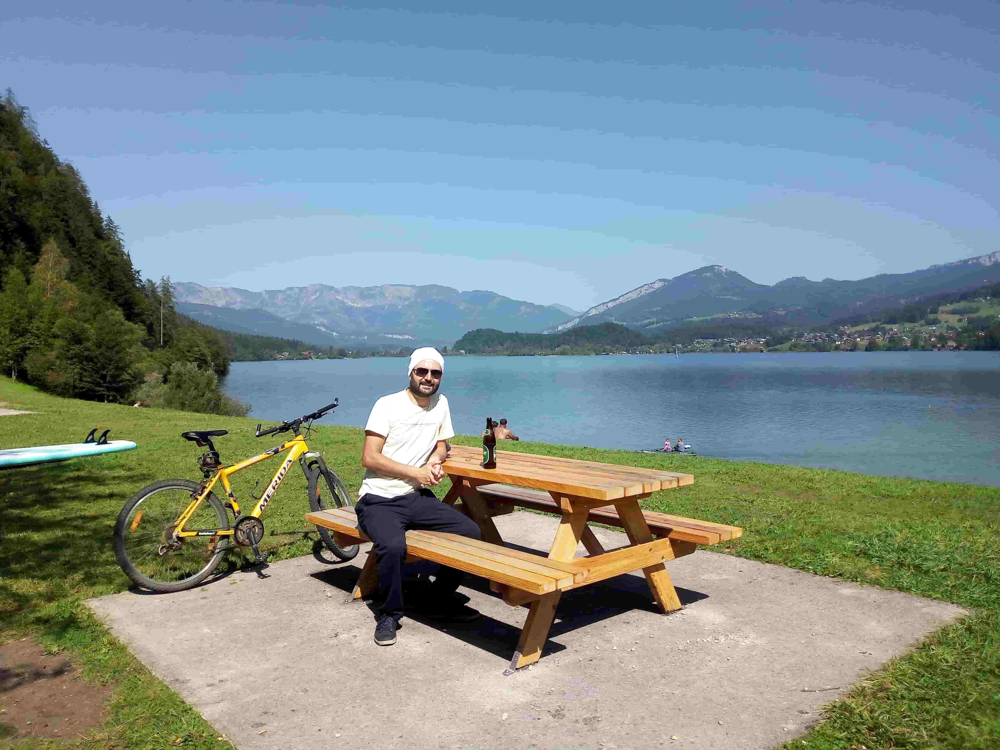

Bad Goisern is a picturesque town in Austria's Salzkammergut region, surrounded by the Austrian Alps and known for its beautiful landscapes and traditional architecture. This page presents personal travel memories and photographs from Bad Goisern, capturing the scenery and atmosphere of this charming Austrian destination.
```